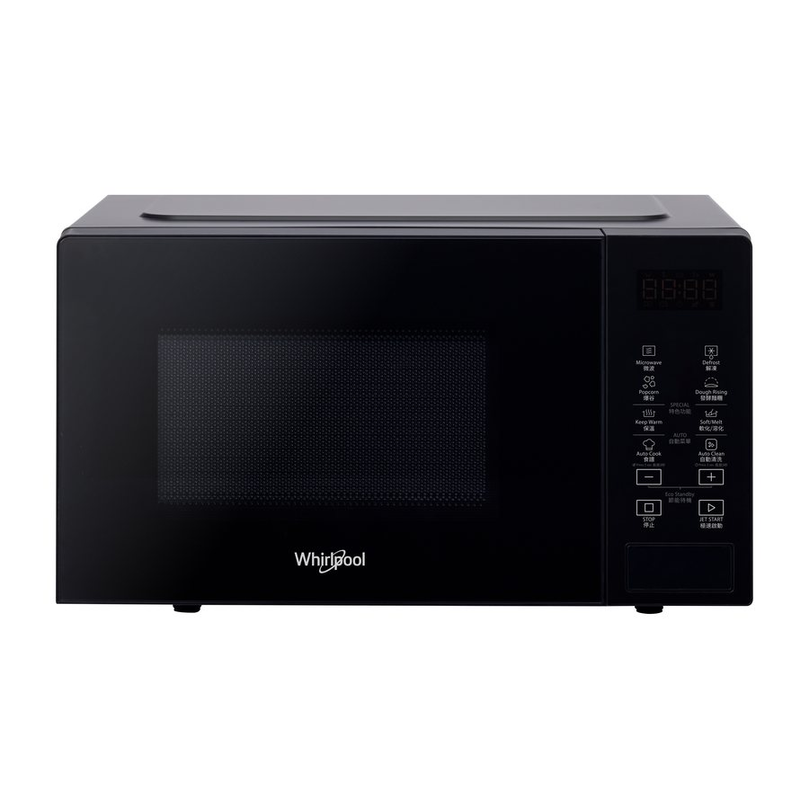
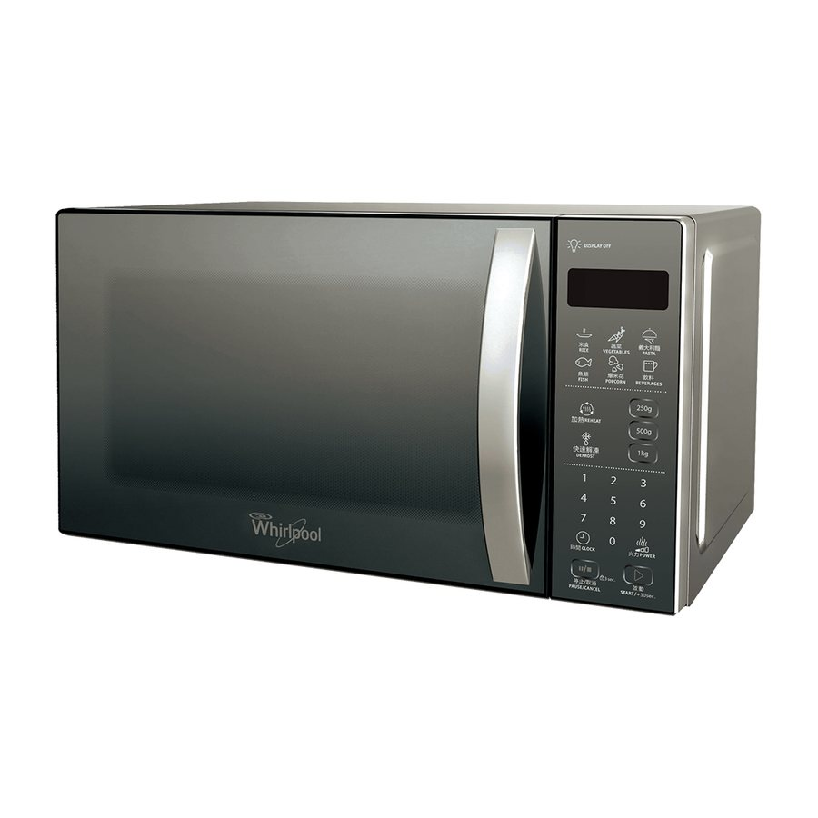
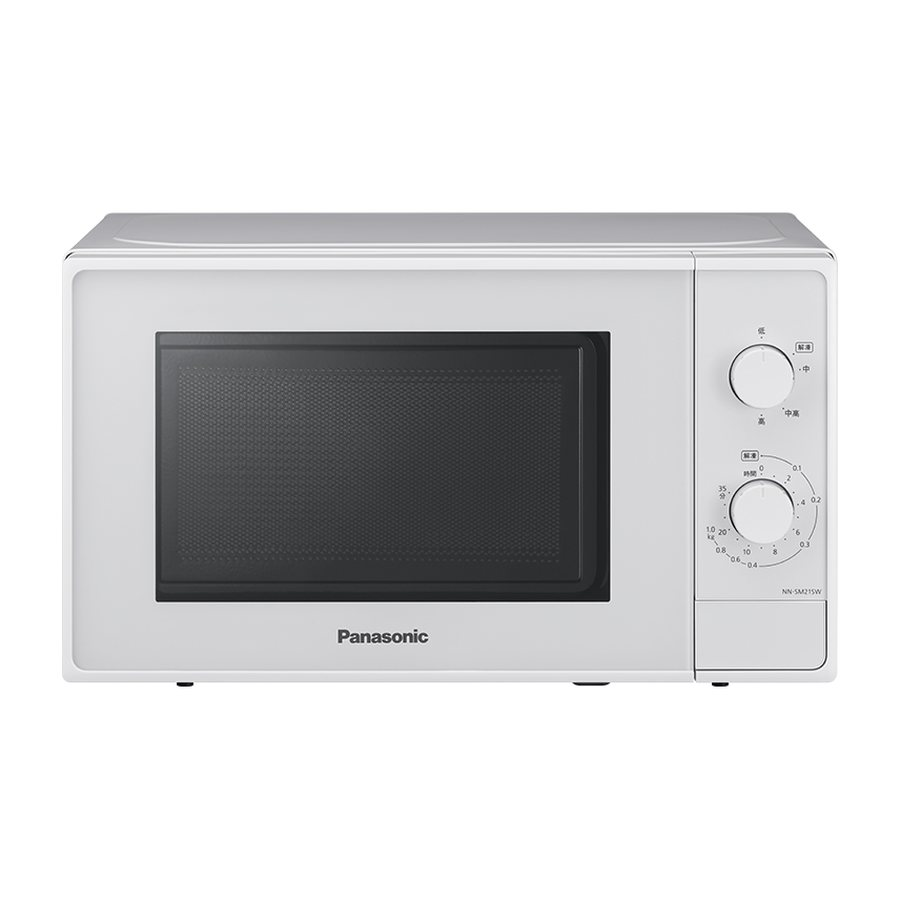
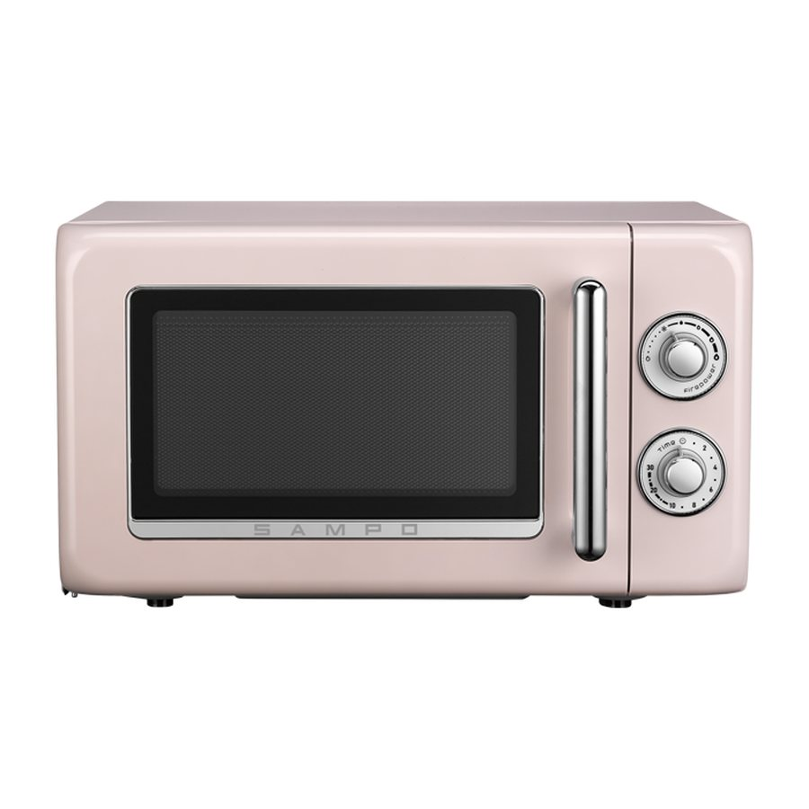
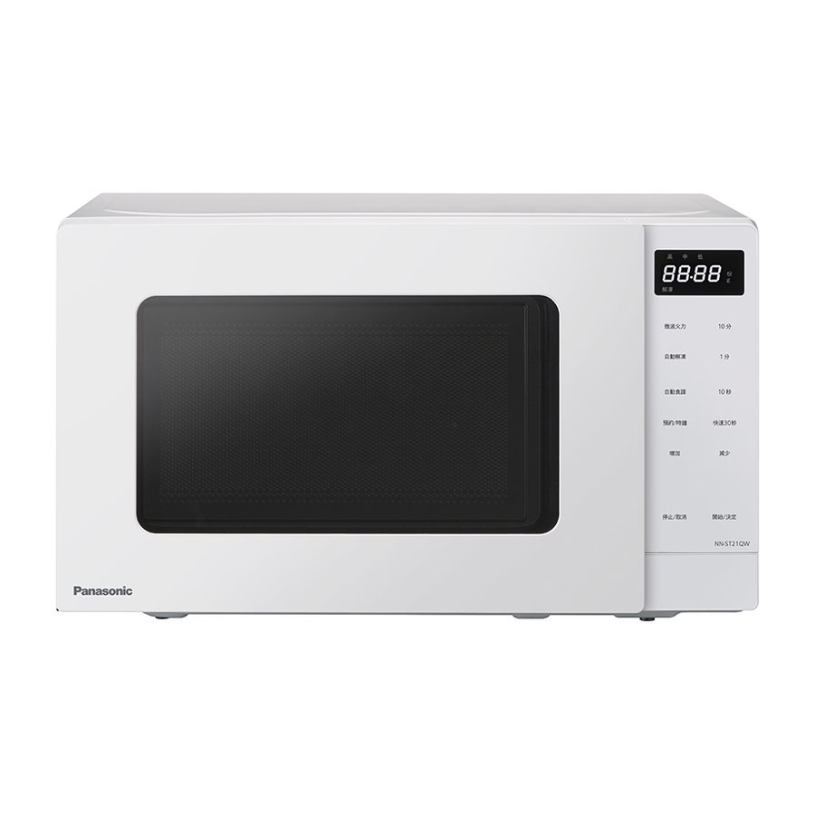

套房微波爐怎麼挑？20L 5 款比較，先算分路與擺放空間（2026）
本文怎麼整理。租套房想用微波爐，先要知道它的額定消耗功率會吃掉分路多少，以及機身周圍要留多少空間。以下依 2026 年 11 月 28 日惠而浦、Panasonic、聲寶的品牌官網與官網下載的說明書，並查標準檢驗局商品召回訊息，整理 5 款官網價 NT$2,790–3,690 的 20L 微波爐；沒有實機測試，也不比較加熱快慢、噪音或銷量。官方沒寫的項目一律標「未列」。內容由 AI 協助整理，規格與價格依文中來源核對。
快速結論：先排除不適合的
以下只摘錄可核對的官網規格與限制。編號不是排名；細節請看各款說明。
- NT$2,790–3,690惠而浦官網特價、Panasonic 官方購物商城價與聲寶官網建議售價（查詢日 2026-11-28）
- 1,100–1,280W3 款有列的消耗功率；Panasonic 2 款台灣官網未列
- 10–30 cm3 款說明書要求的上方留空；Panasonic 2 款未列
以 110V、15A 分路、功率因數取 1 估算：1,100W 微波爐單台約 10.0A，加 500W 電子鍋合計約 14.5A，只剩約 0.5A，分路沒確認前先錯開使用；惠而浦 MWP201EBT 說明書列 1,280W（約 11.6A），加 500W 電子鍋合計約 16.2A，超過 15A；加 1,200W 電暖器或 1,500W 吹風機，合計都在 20A 以上。
-
要 800W 輸出、7 段火力與 8 組自動解凍，檯面上方能留 30 cm
惠而浦 MWP201EBT｜800W・消耗 1,100W／1,280W・電子式 不適合 上方留不到 30 cm、檯面離地低於 850 mm，或打算接延長線的人（說明書列為限制）
-
要 10 段火力與重量解凍（100–2,500g），官網與說明書功率一致
惠而浦 WMWE200S｜700W・消耗 1,100W・電子式 不適合 要 800W 輸出的人（這款是 700W），或檯面留不出寬 55.5×深 45.3×高 46.2 cm 的人
-
要機械式、5 段火力與 800W 輸出，接受消耗功率與留空未列
Panasonic NN-SM21SW｜800W・消耗功率未列・機械式 不適合 買前要先核對消耗功率、爐腔尺寸與擺放留空數字的人（台灣官網都未列） 別買錯 NN-ST25JW 是另一型號，它說明書的 1,250W 不是本機數字，以 NN-SM21SW 機身銘牌為準
-
要雙旋鈕操作，且要說明書有列 1,100W 與留空
聲寶 RE-N205TR｜700W・消耗 1,100W・雙旋鈕 不適合 常放高容器的人（爐內高 178 mm，是有列爐腔尺寸的 3 款中最矮，買前先量常用容器含蓋高度），或寬度留不出 65.2 cm 的人
-
要微電腦操作、10 道自動料理與爐內燈，接受功率與留空未列
Panasonic NN-ST21QW｜微波輸出未列・消耗功率未列・微電腦 不適合 買前要先核對台灣 110V 消耗功率、微波輸出瓦數與擺放留空的人（台灣官網都未列） 別買錯 歐洲 230–240V 版說明書的 800W／1,250W 不是台灣版數字，以機身銘牌為準
編號為文章編排順序，不是實機評測排名。本次未查庫存，選購當下請以賣場顯示為準。
微波爐和電鍋、電暖器、吹風機的功率要一起加總；能不能放進房間、放在哪裡，以租約與房東規定為準。
目錄（11 項）
5 款候選怎麼對照
本站含蝦皮分潤連結，透過連結購買我可能獲得分潤，不影響你的價格
| 商品 | 微波輸出／消耗功率 | 機身 寬×深×高 mm | 爐腔 寬×深×高 mm | 擺放留空（原廠） | 價格 |
|---|---|---|---|---|---|
|
 |
800W／1,100W（官網）、1,280W（說明書） | 456×326×264 | 302×302×219 | 上方 30 cm | NT$2,790 惠而浦官網特價（2026-11-28 查詢） |
|
 |
700W／1,100W | 455×353×262 | 315×294×220 | 上 20、背 10、兩側各 5 cm | NT$2,805 惠而浦官網特價（2026-11-28 查詢） |
|
 |
800W／未列 | 443×330×258（約略） | 未列 | 未列 | NT$2,990 Panasonic 官方購物商城價（2026-11-28 查詢） |
|
 |
700W／1,100W | 452×362×262 | 315×296×178 | 四周與上方各 10 cm | NT$2,990 聲寶官網建議售價（2026-11-28 查詢） |
|
 |
未列／未列 | 440×324×258（約略） | 未列 | 未列 | NT$3,690 Panasonic 官方購物商城價（2026-11-28 查詢） |
查詢日 2026-11-28・編號非排名・點型號看詳細
- 惠而浦 MWP201EBT NT$2,790 惠而浦官網特價（2026-11-28 查詢） 800W · 消耗 1,100／1,280W · 11.5kg 電子式 · 7 段火力 · 上方留 30 cm
- 惠而浦 WMWE200S NT$2,805 惠而浦官網特價（2026-11-28 查詢） 700W · 消耗 1,100W · 約 12.1kg 電子式 · 10 段火力 · 重量解凍 100–2,500g
- Panasonic NN-SM21SW NT$2,990 Panasonic 官方購物商城價（2026-11-28 查詢） 800W · 消耗功率未列 · 約 11kg 官網稱機械式 · 5 段火力 · 解凍功能
- 聲寶 RE-N205TR NT$2,990 聲寶官網建議售價（2026-11-28 查詢） 700W · 消耗 1,100W · 11.0kg 雙旋鈕 · 5 段火力 · 30 分鐘定時
- Panasonic NN-ST21QW NT$3,690 Panasonic 官方購物商城價（2026-11-28 查詢） 輸出未列 · 消耗功率未列 · 約 11kg 微電腦 · 自動料理 10 道 · 爐內燈
蝦皮售價依賣場即時變動，以點進去的頁面為準。
「未列」＝該來源頁沒有標示，不代表沒有。微波輸出是火力標示，消耗功率才是插座要供的電。尺寸依各官網或說明書原文，Panasonic 兩款為官網約略值。價格來源各不相同：惠而浦是官網特價、Panasonic 是官方購物商城價、聲寶是官網建議售價，不能當蝦皮售價。
逐款比較
惠而浦 Whirlpool
MWP201EBT
惠而浦 MWP201EBT（微波輸出 800W，20L，電子式）
- 微波輸出
- 800W
- 消耗功率
- 官網 1,100W；說明書 1,280W（110V/60Hz）
- 火力／定時
- 7 段火力；定時最長 99 分鐘
- 內建功能
- 6 組自動菜單；8 組自動解凍；官網寫 4 段軟化＋4 段融化行程、自動清潔行程
- 安全功能
- 兒童安全鎖
- 尺寸
- 機身 456×326×264 mm；爐腔 302×302×219 mm
- 重量
- 11.5kg
- 待機／能效
- 待機 1.00W；能源效率值 57%
- 擺放
- 上方至少 30 cm；不放櫥櫃；檯面離地不低於 850 mm；說明書寫不要使用延長線
官網規格列微波輸出 800W、7 段火力、定時最長 99 分鐘，另有 6 組自動菜單、8 組自動解凍、4 段軟化加 4 段融化行程與自動清潔行程，機體設計寫電子式。機身 456×326×264 mm，爐腔 302×302×219 mm，重 11.5kg，待機功率 1.00W。官網寫自動清潔是倒入 300 毫升水，用蒸氣軟化污垢後擦拭。
限制有兩個。消耗功率官網寫 1,100W，說明書寫額定輸入功率 1,280W，官方沒說明差異，算分路請用較高的 1,280W（約 11.6A）。說明書要求上方至少留 30 cm、不放櫥櫃、檯面離地不低於 850 mm，也寫不要使用延長線。
規格來源：惠而浦台灣官網商品頁規格與官網下載的使用說明書
惠而浦 Whirlpool
WMWE200S
惠而浦 WMWE200S（微波輸出 700W，20L，電子式）
- 微波輸出
- 700W
- 消耗功率
- 1,100W（官網與說明書一致；110V/60Hz）
- 火力／定時
- 10 段火力；定時 59 分 59 秒
- 內建功能
- 6 組自動菜單；重量解凍 100–2,500g；重量烹調 100–1,000g
- 安全功能
- 兒童安全鎖
- 尺寸
- 機身 455×353×262 mm；爐腔 315×294×220 mm
- 重量
- 約 12.1kg
- 待機／能效
- 待機 1.00W；能源效率值 57%
- 擺放
- 上方 20 cm、背後 10 cm、左右各 5 cm；不放櫥櫃；不可拆除爐腳
官網規格列微波功率 700W、10 段火力、定時 59 分 59 秒、6 組自動菜單，重量解凍 100–2,500g、重量烹調 100–1,000g，另有兒童安全鎖。機身 455×353×262 mm，爐腔 315×294×220 mm，重 12.1kg。消耗功率官網與說明書都寫 1,100W，約 10.0A。
限制是輸出 700W，比同表標 800W 的 MWP201EBT、NN-SM21SW 低。說明書要求上方 20 cm、背後 10 cm、兩側各 5 cm，不可拆除爐腳，部分內容是簡體字。
規格來源：惠而浦台灣官網商品頁規格與官網下載的使用說明書
Panasonic
NN-SM21SW
Panasonic NN-SM21SW（微波輸出 800W，20L，機械式）
- 微波輸出
- 800W
- 消耗功率
- 未列（台灣官網）
- 火力／定時
- 5 段微波火力；定時上限未列
- 內建功能
- 解凍功能；轉盤式爐腔
- 尺寸
- 機身 443×330×258 mm（官網寫為約略值）；爐腔未列
- 重量
- 11kg（約略值）
- 擺放
- 未列（官網有「檢視安裝空間」圖，本文未讀到數字）
- 說明書
- 台灣官網說明書下載查不到
官網規格列容量 20L、5 段微波火力、800W 微波輸出、解凍功能與轉盤式爐腔，機身約 443×330×258 mm，重約 11kg。
限制是台灣官網沒有消耗功率、爐腔尺寸、待機功率與擺放留空的數字，說明書也查不到（2026-11-28 在 Panasonic 台灣官網說明書下載查詢，沒有結果）。同廠另一款 20L 的 NN-ST25JW，Panasonic 台灣官網 NN-ST25JW 說明書列消耗電功率 1,250W（約 11.4A），只能當參考，下單前請向原廠或賣方確認台灣版銘牌額定電流與擺放間距。
規格來源：Panasonic 官方購物商城商品頁與台灣官網規格頁
聲寶 SAMPO
RE-N205TR
聲寶 RE-N205TR（微波輸出 700W，20L，雙旋鈕）
- 微波輸出
- 700W
- 消耗功率
- 1,100W（說明書；110V/60Hz）
- 火力／定時
- 5 段火力選擇；定時 30 分鐘
- 內建功能
- 解凍功能
- 操作
- 前面板兩個控制旋鈕（說明書）
- 尺寸
- 機身 452×362×262 mm；爐腔 315×296×178 mm
- 重量
- 11.0kg；電源線 1.0 公尺
- 待機／能效
- 關機 0.50W（待機欄「---」）；能源效率 57%
- 擺放
- 四周及上方各留 10 cm；不得嵌入或置於櫥櫃
官網寫容量 20L、微波輸出 700W、5 段火力選擇加解凍功能、30 分鐘定時。說明書規格列總額定消耗電功率 1,100W，機身 452×362×262 mm，爐腔 315×296×178 mm，重 11.0kg，電源線 1.0 公尺，前面板是兩個控制旋鈕。
限制是爐內高度只有 178 mm，轉盤直徑官網和說明書都未列；說明書要求四周與上方各留 10 cm、不得放進櫥櫃。價格是官網建議售價，不是實際成交價。
規格來源：聲寶官網商品頁與官網下載的說明書
Panasonic
NN-ST21QW
Panasonic NN-ST21QW（20L，微電腦）
- 微波輸出
- 未列（台灣官網；歐洲版說明書 800W，參考）
- 消耗功率
- 未列（台灣官網；歐洲 230–240V 版最大 1,250W，參考）
- 火力／定時
- 微波火力 5 段；定時上限未列
- 內建功能
- 自動料理 10 道；自動解凍；爐內燈
- 安全功能
- 兒童安全鎖
- 尺寸
- 機身 440×324×258 mm（約略值）；爐腔未列
- 重量
- 11kg（約略值）
- 擺放
- 台灣官網未列數字（歐洲版：上 15、背 10、兩側各 5 cm，僅限檯面、不可入櫥櫃，參考）
官網規格列容量 20L、微波火力 5 段、自動料理 10 道、自動解凍、爐內燈與兒童安全鎖，機身約 440×324×258 mm，重約 11kg。
限制是台灣官網沒有微波輸出瓦數、消耗功率、爐腔尺寸與擺放留空，說明書也查不到。Panasonic 歐洲官網 NN-ST21QW 說明書（230–240V、50Hz 版本）列輸出 800W、最大消耗功率 1,250W，擺放上方 15 cm、背後 10 cm、兩側各 5 cm，電壓版本不同，只能參考。
規格來源：Panasonic 官方購物商城商品頁與台灣官網規格頁
適合誰
- 要 800W 輸出和電子式操作，檯面上方能留 30 cm、離地達 850 mm：惠而浦 MWP201EBT（消耗功率官網與說明書差 180W，用 1,280W 檢查）。
- 要 10 段火力和重量解凍，接受輸出 700W：惠而浦 WMWE200S（官網與說明書同寫 1,100W）。
- 要機械式、800W 輸出，接受消耗功率與留空未列：Panasonic NN-SM21SW。
- 要雙旋鈕操作，不放高容器，寬度能留 65.2 cm：聲寶 RE-N205TR（說明書列 1,100W）。
- 要微電腦操作和 10 道自動料理，接受功率與留空未列，也接受表列價格最高（三家來源不同）：Panasonic NN-ST21QW。
不管選哪台，下單前向賣方確認銘牌額定電流，到貨再核對；再量放置位置的留空，並把同一分路上其他電器一起加總。
常見問題
為什麼沒放東芝和大同？
東芝 MW3-EM20P 的東芝官網規格列消耗功率 1,400W、微波輸出 800W，但沒有標價，無法放進同價位帶比較；1,400W 以功率因數取 1 估算約 12.7A，已超過 15A 分路的單台 12A 上限。大同 TMO-20MG 在 2026-11-28 查詢時，大同官方購物網連線逾時，無法核對當日價格與規格，所以這次沒放。
惠而浦 MWP201EBT 的功率為什麼有兩個數字？
官網規格表寫 1,100W，官網下載的說明書寫額定輸入功率 1,280W，官方沒有說明差異。算分路請用較高的 1,280W（約 11.6A）檢查，並以機身銘牌額定電流為準。惠而浦 WMWE200S 則是官網與說明書都寫 1,100W。
這 5 款有出現在召回名單嗎？
2026-11-28 以「微波爐」查詢標準檢驗局商品召回訊息，共 0 筆；以 5 個型號分別查詢也都是 0 筆。以品牌查詢：「聲寶」5 筆（2024 年循環扇、2013 年電冰箱、2011 與 2009 年除濕機、2009 年電暖器）、「Panasonic」4 筆（2018 年電子鍋電源線，其餘為筆電與平板電池）、「惠而浦」1 筆（2009 年除濕機），都沒有微波爐。以上是 2026-11-28 當天的查詢結果。
能和電鍋／電子鍋、電暖器同時用嗎？
要看兩台是不是同一條分路，以及該分路斷路器的額定電流，算法見上方〈先算分路〉。以 15A 分路、功率因數取 1 估算：1,100W 微波爐加 500W 電子鍋合計約 14.5A，沒超過 15A，但只剩約 0.5A，分路沒確認前先錯開使用；加 1,200W 電暖器合計約 20.9A，超過 15A。實際以銘牌額定電流、現場分路與房東規定為準。
資料與更新紀錄
- 最後核對日
- 核對範圍
- 規格、價格：2026-11-28 查詢惠而浦台灣官網（商品頁規格與官網下載的使用說明書）、Panasonic 官方購物商城與台灣官網規格頁、聲寶官網（商品頁與官網下載的說明書）。Panasonic 兩款在台灣官網說明書下載查詢沒有結果。召回：標準檢驗局商品召回訊息查詢。東芝官網有規格但沒標價；大同官方購物網連線逾時。庫存未查。
- 這次改了什麼
- 首次發布。